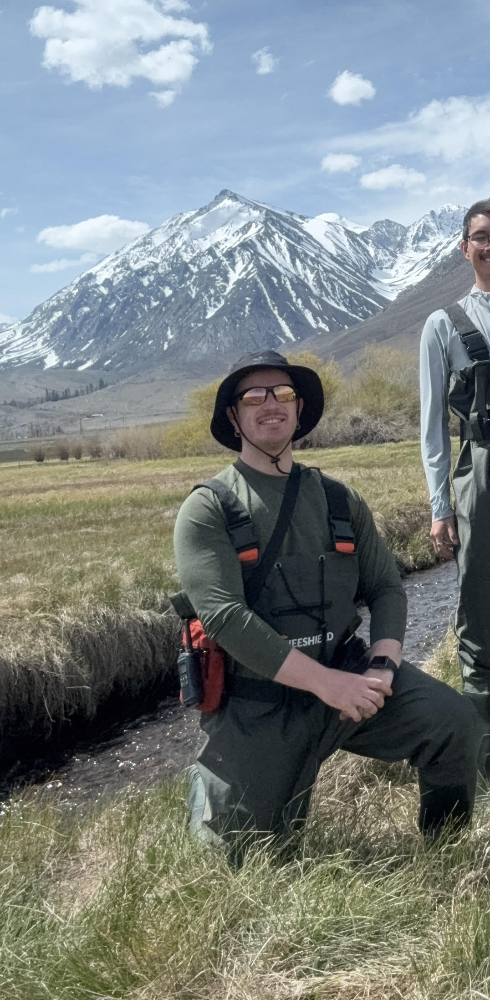

Hi, I'm Jordan Rose
I'm a physical geographer with experience in GIS, spatial analysis, and environmental field research focused on hydrologic and geomorphic systems. Currently pursuing my M.S. in Geographic Information Systems, I integrate geospatial technologies, remote sensing, and field data collection to study watershed processes, sediment transport, and landscape change. Through both my academic and work expereience, I've also built hands-on skills in Python, edge computing, and optical sensor design for streamflow monitoring — adding a hardware and data-pipeline dimension to my geospatial work.

Master's Thesis
Field measurements, UAS-derived topography, and GIS analysis investigating sediment dynamics and landscape change in a post-fire watershed.
This thesis combines on-the-ground measurement with drone-derived elevation data and spatial analysis to understand how wildfire reshapes channel form and water quality over time.
Read the abstract →Mapping Narratives
Story Maps combining GIS, spatial analysis, and visual storytelling to communicate geographic research and environmental processes.
Spatial Analysis & GIS Applications
Selected GIS projects and laboratory reports demonstrating experience with spatial analysis, geospatial data management, and cartographic visualization.
Work Experience
The roles and organizations behind the research above — field hydrology, GIS, and applied sensing work across research labs, nonprofits, and academic programs.
During this nine-week USGS-affiliated research program, I helped build and test SPEC, an edge-computing optical sensor for non-contact streamflow monitoring using Particle Image Velocimetry. I configured Raspberry Pi devices, wrote Python scripts to pull data from USGS web services, and ran flume and tow-tank trials comparing sensor readings against standard flow measurements.
On this NSF-funded project with UT Arlington, I monitor watershed water quality during storm events following the Palisades and Eaton Fires, collecting samples and operating multi-parameter meters and turbidity sensors. I help calibrate instruments, maintain data quality, and integrate field observations into GIS-based analyses of post-fire hydrologic response.
I carried out weekly river corridor surveys with ArcGIS Field Maps to document riparian conditions and environmental hazards along the San Diego River. Water quality samples and spatial data I collected fed into restoration planning and grant reporting for the watershed.
I led spatial data collection and analysis for environmental justice and public health research, producing GIS products that connected environmental conditions to social and infrastructure datasets relevant to community resource access.
I deployed and maintained camera traps across managed watershed areas at Daley Ranch Preserve and managed the resulting spatial datasets as part of a long-term environmental monitoring initiative.
I designed drought-resilient landscapes and irrigation plans grounded in local hydrology and municipal water regulations — an early, hands-on introduction to water-conscious design that still informs how I think about watershed systems today.
Curriculum Vitae
Full summary of research, academic background, and professional experience.
Open CV →